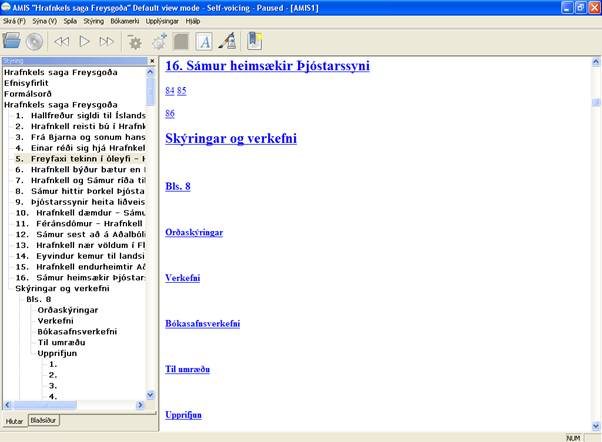
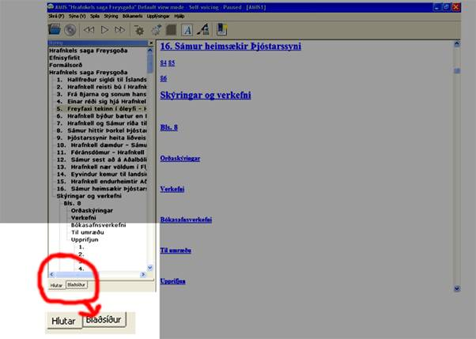
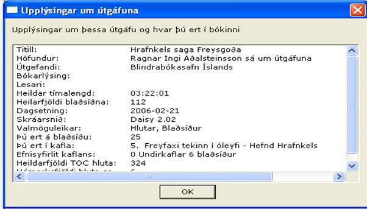
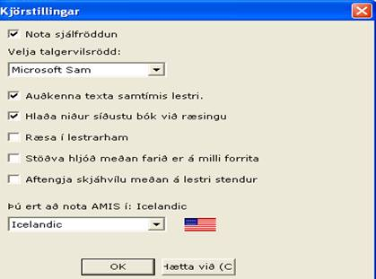
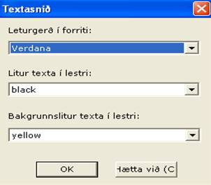

AMIS – Notendaleiðbeiningar
Í þessu skjali er að finna stutta kynningu á AMIS lesforritinu, eiginleikum, skilyrðum og valkostum. Helstu skipanir og lista yfir flýtilykla má nálgast í Hjálp valmyndinni í tólastikunni hér fyrir ofan.
Hvað er AMIS?
AMIS þýðir Adaptive Multimedia Information System.
AMIS er forrit sem er notað við lestur rafrænna bóka eða DAISY bóka. Forritið er sjálfraddað, þ.e. hefur sjálfvirkt tal, sem þýðir að notendur geta nýtt sér það án sérstakra skjálestursforrita. AMIS er opið forrit og ókeypis. AMIS er búið til og stutt af DAISY for All verkefninu sem er fjármagnað af Nippon stofnuninni. AMIS er fáanlegt á mörgum tungumálum, nú einnig á íslensku. Líttu á vefsíðuna AMIS http: //www.amis.sf.net og/eða http: //www.bbi.is og skoðaðu niðurhalskosti og hvernig hægt er að hlaða niður mismunandi tungumálamöguleikum. Haltu áfram að lesa til að kynnast AMIS nánar.
Hvað er DAISY?
DAISY er stytting á „Digital Accessible Information SYstem“ (aðgengilegt, stafrænt upplýsingakerfi). DAISY bækur eru aðgengilegar stafrænar hljóðbækur. Með DAISY tækninni er hægt að setja hljóðbókina upp og meðhöndla hana með svipuðum hætti og prentaða bók. Þannig er bókinni skipt í hluta, blaðsíðu, neðanmálsgreinar, spássíur, hægt er að setja bókamerki og margt fleira. Uppsetninguna og valmöguleikana ætti notandinn að geta tileinkað sér fljótt og auðveldlega. Þú getur lesið meira um DAISY á vefsíðunni http: //www.daisy.org.
Skalið sem þú ert að lesa núna er í raun DAISY bók! Þú sérð textann um leið og hann er lesinn, málsgrein fyrir málsgrein.
DAISY byggir á alþjóðlegum tæknistöðlum og er upphaflega þróað fyrir þá sem geta ekki lesið prentað letur. Það hefur líka mikla þýðingu fyrir miðlun efnis á veraldarvísu.
DAISY samtökin voru stofnuð árið 1996 og eru ört vaxandi alheimssamtök sem hafa það að markmiði að þróa sífellt betra aðgengi fyrir þá sem ekki geta nýtt sér hefðbundið prentað letur.
Þú getur lesið meira um DAISY á http://daisy.org.
Stuðningsforrit
AMIS styður:
· DAISY 2.02
· DAISY 3 (líka kallað ANSI/NISO z39.86-2005)
Nauðsynlegkerfi
Eftirfarandi PC kerfi þurfa að vera til staðar hjá notanda:
· Windows XP, Windows Vista, eða Windows 2000
· DirectX 9
· SAPI 5.1 Texti-Í-Tal (Talgervill)
· Internet Explorer 7 (Nota má aðrar útgáfur en mælt er með þessari.)
· 50 MB diskrými
AMIS uppsetningarforritið lætur vita ef eitthvað af þessu vantar.
Útlit
Skjárinn er tvískiptur: sjálfgefið og hefðbundið snið. AMIS opnast í sjálfgefnu sniði nema að þú gefir skipun um að það opnist í hefðbundnu sniði (þessi skipun er í Stjórnunarvalmyndinni).
Í aðal valmyndinni eru fjórir megin þættir: valmynd, tólaslá, stjórnunargluggi til vinstri og efnisgluggi fyrir miðjum skjá.

Á tólaslánni eru ellefu meðalstórir hnappar: opna bók, hlaða CD, fara í síðustu málsgrein, spila/pása, fara í næstu málsgrein, hægja á, hraða, smærra letur, stærra letur, breyta síðusniði og setja inn bókamerki.

Tólasláin
Stjórnunarglugginn hefur að geyma einn eða fleiri undirlista, allt eftir því hvað bókin hefur að geyma. Fyrsti listinn er alltaf yfirlit yfir hluta. Annar listinn inniheldur blaðsíðutöl (ef blaðsíður er að finna í bókinni). Listarnir sem koma á eftir sýna sérstaka þætti eins og neðanmálsgreinar eða tölur (ef bókin hefur slíkt að geyma), hver hlutur birtist undir viðeigandi hluta.

Stjórnunarglugginn
Í grunnbirtingarmyndinni eru tvö megin stýritæki: tólaslá neðst á skjánum og gluggi með staðsetningarupplýsingum fyrir miðjum skjá. Á tólaslánni eru fjórir stórir hnappar; síðasta málsgrein, spila/pása, næsta málsgrein, fara aftur í frumbirtingarmynd. Það er ekkert efnisyfirlit eða stýrigluggi í grunnbirtingarmyndinni.
 AMIS - grunnbirtingarmynd
AMIS - grunnbirtingarmynd
Valkostir
Næsti hluti hefur að geyma stuttar lýsingar á valkostum í AMIS, í þeirri röð sem þeir birtast.
Opna nýlega lesna bók
Opna við ræsingu þá bók sem síðast var lesin
· Opna bók úr „skipanalínu“
· Opna innihald geisladisks sem geymir eina eða margar bækur
· Opna bók úr staðbundnu skráasafni
· Opna bók af URL-slóð (vefslóð)
Afspilun stjórnað
DAISY bækur spilast sjálfkrafa frá byrjun til enda. Þú getur stjórnað eftirfarandi atriðum:
· Spila og stöðva lestur bókarinnar
· Hraða á afspilun
· Stökkva á milli lesmöguleika, til dæmis blaðsíðutilkynninga og neðanmálsgreina
Stýring
Til viðbótar við beina afspilun bjóða Daisy bækur upp á aðrar leiðir til að fara um.
· Fyrri/Næsti frasi
· Fyrri/Næsta síða
· Fyrri/Næsti hluti
· Fara á síðu
· Leita að texta
Notkun „leiðbeiningagluggans“
Notaðu hlutina í leiðbeiningaglugganum til að skoða uppbyggingu bókarinnar.
· Stigskiptingu í hluta eftir mikilvægi
· Lista yfir blaðsíður
· Lista yfir sérhverja sérskiptingu í hluta í bókinni
Bókamerkjastillingar
· Bæta við bókamerki (Nefnist sjálfkrafa eftir því sem þú ert að bókamerkja)
· Fara á bókamerki
· Bókamerkjalisti fyrir tiltekna bók hleðst inn þegar þú opnar þá bók.
Að nálgast upplýsingar um útgáfuna
Það er auðvelt að nálgast upplýsingar um bókina sem þú ert að lesa með því að nota gluggann „helstu útgáfuupplýsingar“ í AMIS. Hér er heildarlisti yfir það sem er í boði:
· Titill
· Höfundur
· Útgefandi
· Lýsing
· Lesari
· Heildar afspilunartími
· Heildarfjöldi blaðsíðna
· Dagsetning
· Snið
· Sérkenni (hlutir á borð við hluta, blaðsíður og neðanmálsgreinar)
· Núgild síða
· Núgildur hluti (að meðtöldum fjölda blaðsíðna og undirhluta)
· Heildarfjöldi atriða í efnisyfirliti
· Hámarks dýpt hluta

Gluggi með útgáfuupplýsingum
Að fá hjálp með AMIS
· Fáðu grunnupplýsingar um AMIS
· Lestu notendaleiðbeiningarnar (þetta skjal)
· Lærðu allar skipanir og flýtivísanir fyrir AMIS
Breytingar á útliti
Notendaviðmót AMIS gefur þér valkosti um mismunandi birtingarmyndir fyrir skjáinn og útlit DAISY bókarinnar.
· Nota grunnbirtingarmynd
· Sýna/fela stjórnunarglugga
· Færa stjórnunarglugga
· Breyta sniði síðunnar
· Stækka letrið
· Stilla auðkennisliti og breyta letri með því að nota textasniðsgluggann
Kjörstillingar
Eftirfarandi stillingar má nálgast gegnum kjörstillingagluggann í fellivalmyndinni skrár.
· Kveikja eða slökkva á sjálfröddun
· Velja rödd fyrir Texta-Í-Tal
· Kveikja og slökkva á auðkenningu texta
· Hlaða inn síðustu lesnu bók við ræsingu
· Ræsa AMIS í venjulegum ham
· Hvíla AMIS sjálfkrafa þegar stokkið er milli forrita
· Aftengja skjáhvílu meðan AMIS er í gangi
· Velja tungumálapakka til að nota með AMIS

Gluggi fyrir kjörstillingar
Stillingar á textasniðum
Eftirfarandi stillingar nálgast þú gegnum textasniðsgluggann undir valmyndinni Sýna.
· Val leturgerðar fyrir AMIS
· Val á grunn- og bakgrunnslitum fyrir auðkenningu textans í afspilun

Gluggi fyrir textasnið
Hafðu samband
Heimasíða AMIS er http://amisproject.org. Allar upplýsingar um nýjar útgáfur, tungumálapakka sem eru í boði, tilkynningar um villur og upplýsingar um hvernig hægt er að hjálpa okkur má finna þar. Við hlökkum til að heyra frá þér.